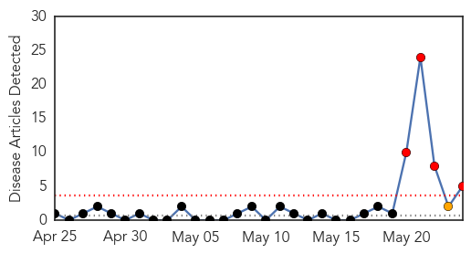
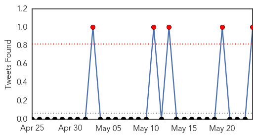
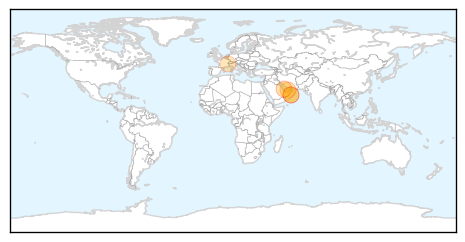

Mold/Fungal
30-Day Web Trend
0 alerts, 0 warnings

30-Day Twitter Trend
0 alerts, 0 warnings

Article Locations

Article Confidences

Top Articles:
-
No articles found for May 24, 2015
Top Tweets:
-
No tweets found for May 24, 2015
MERS
30-Day Web Trend
4 alerts, 1 warnings

30-Day Twitter Trend
2 alerts, 0 warnings

Article Locations
Article Confidences

Top Articles:
- 0.999
- Middle East respiratory syndrome coronavirus (MERS-CoV) – Republic of Korea
- 0.998
- Middle East respiratory syndrome coronavirus (MERS-CoV) – United Arab Emirates
- 0.998
- DH closely monitors 14 additional MERS cases
- 0.927
- Man detected with MERS-CoV in UAE had travelled to Ibri on May 6
- 0.800
- Al-Falih: MERS checked
Top Tweets:
- 0.902
- Avian Flu Diary: WHO MERS-CoV Update – Saudi Arabia http://t.co/8tAGETBJgU
- 0.753
- Avian Flu Diary: WHO MERS-CoV Updates: South Korea, Qatar, UAE http://t.co/xpz8m828uq
- 0.627
- AFD Blog `@WHO MERS-CoV Update – Saudi Arabia' http://t.co/8rEeboqaV9
- 0.589
- AFD Blog `Saudi MOH: 1 More MERS Case In Hafuf' MERS-CoV http://t.co/KWzQwocCCy